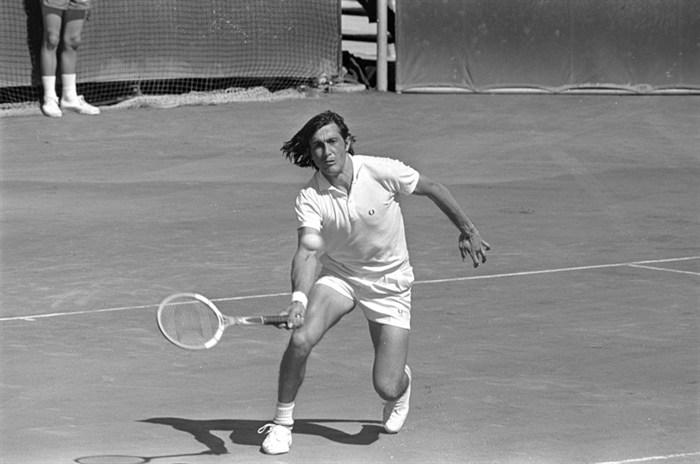

Site-ul oficial al ATP ne-a mai dat un motiv de mândrie, într-o perioadă oricum foarte prolifică pentru tenisul românesc. ATP mai are o lună până când va sărbători 40 de ani de la înființarea ATP Rankings, despre a cărui istorie v-am povestit pe larg în acest articol.
Ca atare, ATP îi readuce în prim-plan pe toți liderii clasamentului într-un serial denumit #ATPHeritage. Și, natural, a început cu primul dintre ei, cu Ilie Năstase, despre care site-ul ATP scrie că era "una dintre cele mai explozive și colorate personalități ale sportului, un talent uluitor".
Năstase, care și-a sărbătorit săptămâna trecută ziua de naștere, a urcat pe primul loc în 1973, pe 23 august 1973, într-un an în care a adunat 14 trofee. "Am câștigat totul pe zgură, dar știam că am nevoie și de victorii pe iarbă sau hard ca să am șanse la primul loc". 1973, anul încoronării sale, a fost și cel mai bun an al carierei, el impunându-se în 15 turnee.
Ilie a predat primul loc după 40 de săptămâni, pe 3 iunie 1974. Recunoaște că n-a prea apucat să se bucure de primul loc, pentru că "toți voiau să mi-l ia".
Pentru cei care (încă) nu știu, Ilie Năstase a cucerit 57 de titluri de simplu de-a lungul carierei, cărora li se adaugă alte 45 de titluri la dublu. Este unul dintre cei cinci jucători care au depășit cota 100 în ce privește totalul turneelor câștigate. Are în palmares șapte titluri de Grand Slam, două dintre ele la simplu, Roland Garros (1973) și US Open (1972), alte trei la dublu și două la dublu mixt. Mai are în cont patru titluri la actualul Turneu al Campionilor (pe atunci Masters Grand Prix).
Titlul de la Roland Garros l-a câștigat fără să piardă vreun set, primul jucător din istorie care reușește o astfel de performanță. Mai are în cont, alături de Ion Țiriac, și trei finale de Cupa Davis. Grație nenumăratelor sale reușite, a fost introdus în Hall of Fame încă din 1991.
"Sunt un pic nebun", spunea el, drept răspuns pentru nenumăratele episoade în care a stârnit amuzamentul, invidia sau după caz, furia și nervii colegilor sau spectatorilor. "Un pic nebun, dar încerc să fiu băiat bun". În replică, Ion Țiriac spunea că Ilie are un "creier care se simte ca pasărea în cușcă

Obișnuit să se distreze și să rupă monotonia de pe teren, deloc preocupat de rigoarea tradițională a tenisului, Ilie a creat nu de puține ori momente hilare pe teren, precum cele descrise aici, dar și momente mai puțin plăcute, precum cel din meciul cu McEnroe, când a fost descalificat, pentru moment, episod pomenit în treacăt aici. Dar în zilele lui bune era extrem de greu de bătut. "Când reușea să se concentreze, putea să facă orice pe teren. Era ca un artist la lucru", scrie site-ul ATP. Tot sursa citată îl vede drept un tip plăcut și prietenos, cu un simț al umorului foarte dezvoltat, dar care nu știa uneori când și cum să se oprească la timp.
De-a lungul carierei lui, Ilie a adunat un pic peste 2 milioane de dolari premii din tenis, cu mult sub ceea ce se câștigă în zilele noastre. Dar e fericit că a fost primul. Primul care a fost primul. Iar restul, spune el, nici nu mai contează.